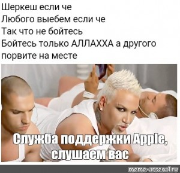

В английском языке gay означает, что человека влечет к персоне того же пола. Поэтому часто девушки тоже пользуются этим термином. При этом многие гомосексуалы считают слово «гей» оскорбительным и стараются его избегать.
Этот термин применим к женщинам, которых на эмоциональном, физическом и романтическом уровнях привлекают девушки. Как уже упоминалось, некоторые лесбиянки называют себя gays.
Обозначает персон, которых привлекают как мужчины, так и женщины. При этом у них может отсутствовать сексуальное влечение к партнеру, а отношения будут строиться лишь на романтических чувствах. Также в течение всей жизни предпочтения бисексуалов часто меняются: человеку могут больше нравиться сначала девушки, потом парни и наоборот.
«Квир» в переводе с английского означает «странный» или «неопределенный». Такие персоны считают, что ограничиваться одной сексуальной идентичностью просто бессмысленно. Кроме того, под этим термином объединяют все возможные меньшинства. А также квир-людьми называют тех, кто сомневается в своих гендере и сексуальности.
Тот, кто не испытывает сексуальное влечение.
Человек, который не испытывает романтическое влечение.
Персона, которую сексуально, романтически и эмоционально привлекают люди противоположного пола. Гетеросексуалов также называют «натуралами».
Этих людей привлекают мужественные партнеры. При этом им совсем не важно, какого гендера или пола будет человек, это может быть и мужчина, и женщина, и трансперсона.
А это как раз те личности, которых привлекает женственность. Опять же уточним, гиносексуалам не важен гендер и пол партнера. Им нравятся именно феминные черты.
К би-любопытным людям обычно относят гетеросексуалов, которым интересны однополые связи. Таким образом человек ищет свою истинную идентичность.
Для таких людей особенно важна эмоциональная привязанность. Они начинают испытывать романтическое и сексуальное влечение, только когда сблизятся с человеком.
Этим термином обозначают тех, кто заводит отношения (как романтические, так и сексуальные) сразу с несколькими партнерами. Полиаморы могут быть вместе и с девушками, и с парнями.
Их на романтическом, эмоциональном и сексуальном уровнях привлекают персоны, которые не относят себя к одному гендеру или являются транслюдьми.
Сами пансексуалы называют себя «гендерно слепыми», так как при выборе партнера они не обращают внимания на его пол, ориентацию и внутреннюю идентификацию.
Они очень близки к пансексуалам, потому что могут встречаться со всеми людьми, однако в некоторых случаях для омнисексуалов гендерное самовыражение партнера играет ключевую роль. Именно поэтому их называют «гендерно зрячими».
или скотоло́жество, скотоло́жство — парафилия, определяемая как влечение человека, направленное на животных, или признание животных сексуально привлекательными. Термин был предложен в 1894 году немецким психиатром Рихардом Крафт-Эбингом в книге «Сексуальные психопатии».